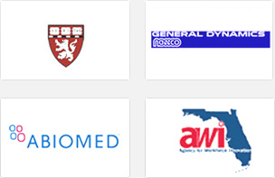
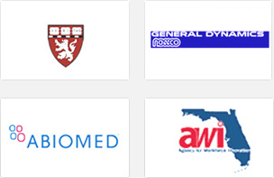

Our experienced interpreters are available in all languages for on-site, telephonic interpretations, for short-term assignments (e.g., depositions, telephone conferences and conversations, etc.) and long-term assignments (e.g., employee training, a week-long conference, etc.). Get a free no-obligation simultaneous or consecutive interpretation quote today!
Interpretation services are rendered by professional consecutive and simultaneous interpreters adhering to strict guidelines. Interpreting project can also include equipment rental with a sound engineer. We schedule professional interpreters from our database of translators to cover consecutive interpretation, simultaneous interpretation, phone interpretation, business meeting or any interpreting need.
Interpretation
A consecutive interpreter awaits his/her turn and does not start speaking until the speaker allows them the time to do so. Usually the speaker pauses after every sentence or phrase. Although this is a time consuming procedure, it can lead to a higher degree of correctness and completeness in the translation, since a consecutive interpreter gets more time to do his work than a simultaneous interpreter. A consecutive interpreter will also not easily see a need to summarize the translation, something that does often happen in simultaneous interpretation.
Simultaneous Interpretation
A simultaneous interpreter is a professional linguist – at least bilingual – who interprets at the same time for someone in another language. Normally, the speaker gives his speech uninterruptedly. In simultaneous interpretation, participants wear headphones, and interpreters deliver the speaker's message into the target language.
Simultaneous Interpretation Equipment
The simultaneous interpretation is performed through a portable system whereby the interpreter attaches a small microphone on his/her shirt and renders the translation into the microphone. In a more complex setting in which participants speak more than 2 foreign languages, a booth is required with transmitters, receivers and a sound system. Indeed, the interpretation equipment is indispensable to carry out any simultaneous conference interpretation. It usually consists of a soundproof booth housing the simultaneous interpreters equipped with a central console, infrared transmitters, headsets for the audience and a qualified technician. The system can be what we call on "simple mode" involving just two languages or on a more complex "relay mode" involving many languages, more interpreters, more than one booth.
Whispering Interpreting
Alternatively, in smaller settings, interpreters may use a portable system instead of a booth. In this instance, the interpreter talks into a small microphone clipped onto his/her shirt. While cheaper and very mobile, this system however does not isolate the interpreter and often times outside noise can distract the interpreter making the task more difficult.